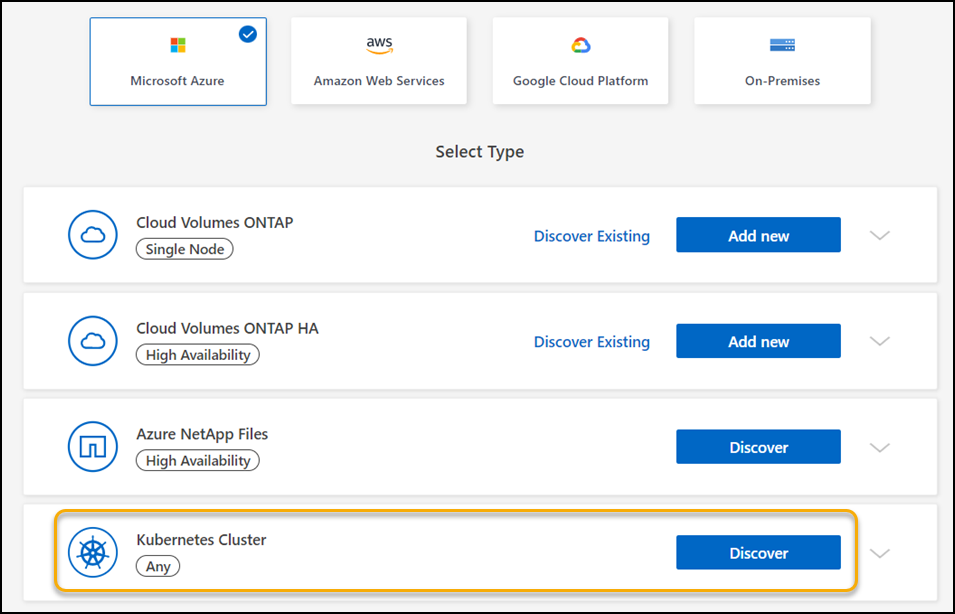
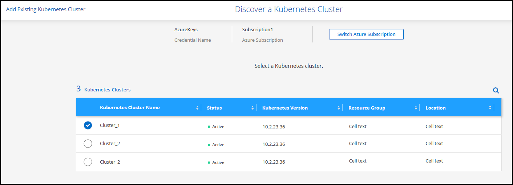
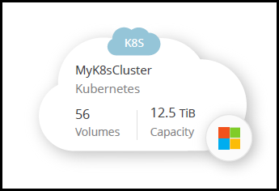
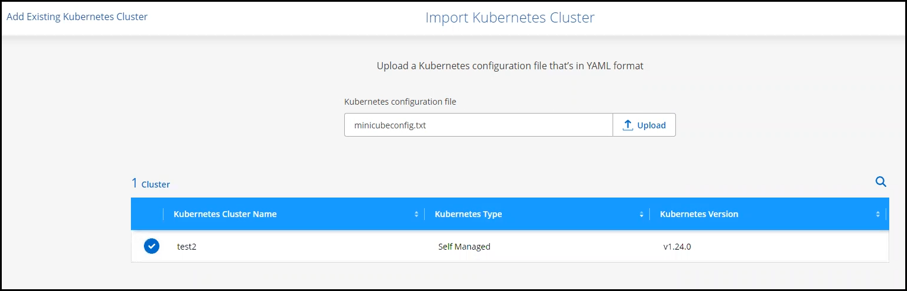
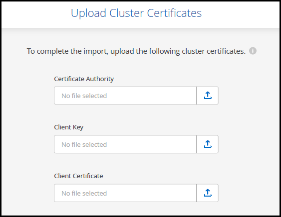

시작하십시오
시작하십시오
Azure Kubernetes 클러스터를 BlueXP에 추가합니다
 변경 제안
변경 제안
Kubernetes 클러스터를 검색하고 BlueXP로 가져와 영구 볼륨을 Azure에 백업할 수 있습니다.
클러스터를 검색합니다
Kubernetes 클러스터를 완벽하게 관리 또는 자체 관리할 수 있습니다. 관리 대상 클러스터를 검색해야만 가져올 수 있습니다.
-
Canvas * 에서 * 작업 환경 추가 * 를 클릭합니다.
-
Microsoft Azure * > * Kubernetes Cluster * > * Discover * 를 선택합니다.

-
Discover Cluster * 를 선택하고 * Next * 를 클릭합니다.
-
Kubernetes 클러스터를 선택하고 * 다음 * 을 클릭합니다.

BlueXP는 Kubernetes 클러스터를 Canvas에 추가합니다.

클러스터를 가져옵니다
Kubernetes 구성 파일을 사용하여 자체 관리되는 Kubernetes 클러스터를 가져올 수 있습니다.
시작하기 전에
Kubernetes 클러스터를 가져오려면 클러스터 역할 YAML 파일에 지정된 사용자에 대한 인증 기관, 클라이언트 키 및 클라이언트 인증서 인증서가 필요합니다. Kubernetes 클러스터 관리자는 Kubernetes 클러스터에서 사용자를 생성할 때 이러한 인증을 받습니다.
-
Canvas * 에서 * 작업 환경 추가 * 를 클릭합니다.
-
Microsoft Azure * > * Kubernetes Cluster * > * Discover * 를 선택합니다.
-
클러스터 가져오기 * 를 선택하고 * 다음 * 을 클릭합니다.
-
YAML 형식의 Kubernetes 구성 파일을 업로드합니다.

-
Kubernetes 클러스터 관리자가 제공한 클러스터 인증서를 업로드합니다.

BlueXP는 Kubernetes 클러스터를 Canvas에 추가합니다.